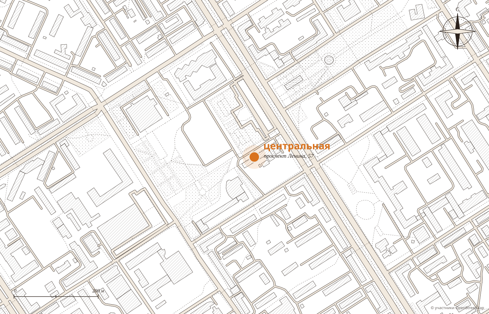

01
С семи утраОткрываемся в семь: завтрак до работы, без спешки.
Демо-макет студии MERIDIAN · не является официальным сайтом заведения
Кофейня · Барнаул · проспект Ленина, 57
Любимая кофейня Барнаула из года в год, говорят гости.
С семи утра до полуночи, без выходных, в минуте от площади Советов.
каждый день с 7:00 до 24:00
Лучшая кофейня 2026 · премии 2ГИС 2019 и 2018 · 4.9, 2191 оценка
Сутки Центральной
«Большой плюс, что открыто с 7 утра», пишут гости. Строка, которая подсвечена, про то, что сейчас в Барнауле.
Как на картинке


«Если вам понравилась картинка в меню, будьте уверены, вы получите точно такое же блюдо», пишет гостья. Цены подставляются из вашего меню.


Три премии 2ГИС
20181 место2019премия 2ГИС2026лучшая кофейня
«Любимая кофейня из года в год сохраняет вкус и качество блюд, за которыми хочется возвращаться», пишет гостья.
Что любят гости
Из отзывов гостей в 2ГИС. Наведите на слово или нажмите на него: покажем, как это выглядит.
Маленькие ритуалы
01
С семи утраОткрываемся в семь: завтрак до работы, без спешки.
02
Вас помнятОфицианты и бариста помнят любимый напиток и когда вы приходили, пишут гости.

03
ДетямДетское меню и раскраски, пока несут пельмешки.
04
Облепиховый чайВ стеклянном чайнике на двоих. Гости называют его просто шикарным.

Адрес и часы
Проспект Ленина, первый этаж. Остановка «Площадь Советов» в минуте, рядом парковки.
Для владельца
Фото блюд на сайте те же, что в зале: гость выбирает ещё по дороге.
С 7:00 до 24:00 по барнаульскому времени: видно, что сейчас подают.
Меню, бронь, адрес и вакансии на своём сайте, который находят в поиске.
Никаких персональных данных: политика конфиденциальности не нужна.